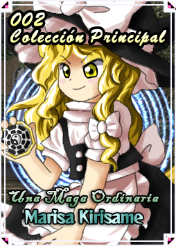
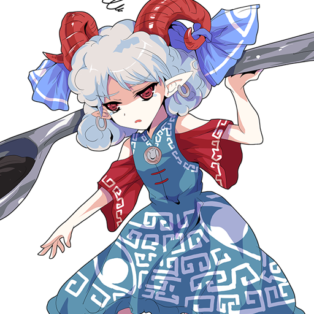
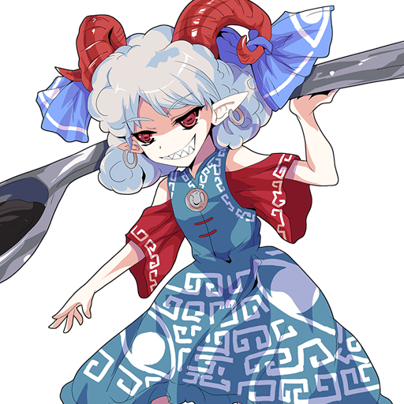

Personaje: Marisa Kirisame
Información del Personaje
Perfil
 Una maga llamada Marisa Kirisame.Una maga algo ordinaria que vive en Gensokyo. También es un "coleccionista compulsiva".
Ella vive en el Bosque de la Magia que los humanos raramente visitan, y lleva una vida despreocupada mientras investiga sobre la magia.
Toda acción que ella toma es por su propia cuenta, y resuelve los incidentes solo porque ella quiere hacerlo.
Esta vez, como el desastre cubrió todo Gensokyo de manera uniforme, decidió extenderse por todo el lugar.
Aunque puede volar por si sola siempre vuela con su escoba.
Mi Opinión del Personaje
Negativo
| ¿Qué es lo que no me gusta de Marisa en primer lugar? | |
|---|---|
|  | Marisa en los juegos principales en general suele ser la más rápida entre los tengus y me cuesta más derrotar a los enemigos, siendo rápida y solo atacando de frente. |
Positivo
| ¿Qué es lo que me gusta de Marisa en primer lugar? | |
|---|---|
|  | Marisa apesar de ser la segunda protagonista permanente, me gusta su diseño pero no es mi personaje favorito de toda la saga de Touhou Project. |
Diferencias de Hisoutensoku y Immaterial and Missing Power
- El sistema de cartas es distinto, aparte que hay algunas cartas de Soku/UNL y IaMP pero la mayoria son originales, aparte que otras son muy rotas.
- Los movimientos normales no son iguales/idénticos ni a Soku ni a IaMP en tanto a frame data o velocidad